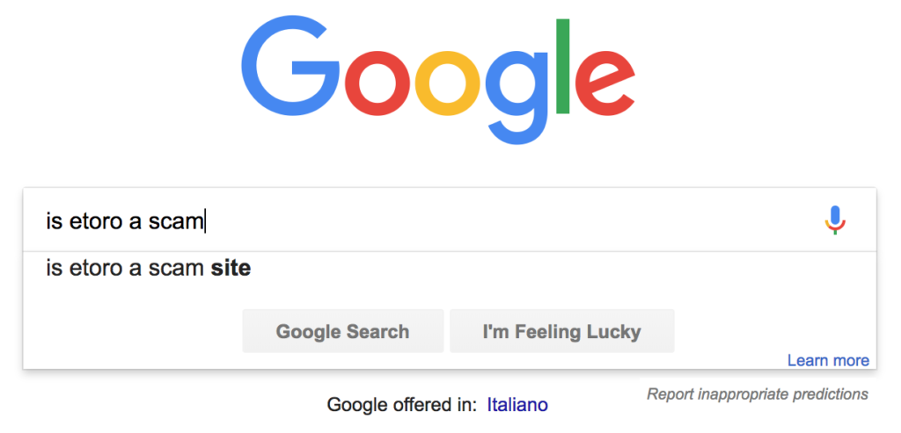
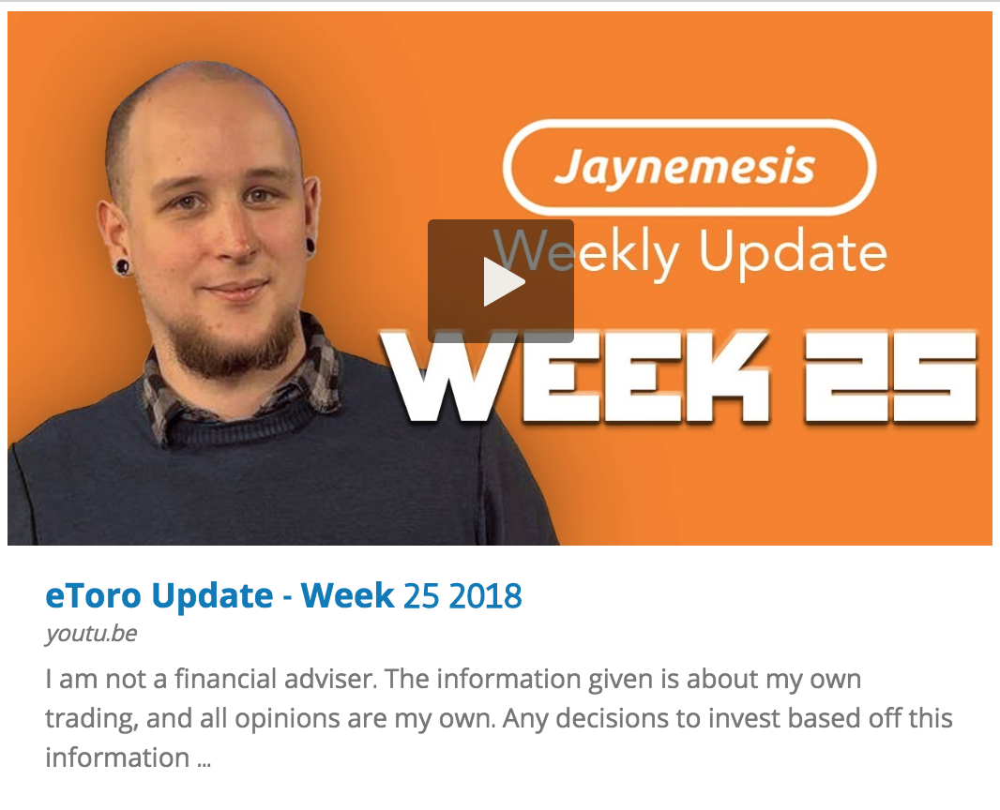

It's a great question, and the first one I asked too. After running my channel for over a year, the questions "Is eToro a scam?" and "Can I trust them?" are by far the most asked by viewers. With good reason — I had exactly the same questions before I put any money in.
Why Did I Want to Know?
I'd been watching videos about High Frequency Trading — those physicists and intense mathematicians who have been writing code (bots) for big banks which trades automatically and makes millions every day. So I thought, "Hold on, maybe there's a site out there where people will let you use their bots to make money and you give them a cut of the profits..." I went looking, and I didn't find any. That's when I found eToro.
Searching in Google — "Is eToro a Scam?"
That's when I started looking. I'm not a rich guy. I don't have any experience with trading. I'm a total beginner. So I needed to know if I was being scammed — it's a real possibility nowadays, there's a lot of scammers out there.
So, off I went to Google: "Is eToro a scam?" went into the little box, and I saw a couple of testimonials and a lot of advertorials. But it seemed legit. I signed up. Every step of the process freaked me out — why did they want a picture of my ID? Why did they need a utility bill showing my address?
Why They Ask for ID
I discovered that's pretty standard for exchanges when you sign up — something to do with anti-money laundering laws. I still didn't like it, but at least it seemed standard. Then there are the questions about "How much money will you be uploading?" and "What is your previous trading experience?" — I felt like I was trying to lie my way past a bouncer. But after a while I'd uploaded everything and I was in.
I Uploaded My First Money to eToro
I put in a small amount just to test. Then I left it there for a week or two, and then I wanted to test my big question: could I actually get my money back?
The Real Test — Could I Withdraw?
So I withdrew it — all of it. I just had to check whether I'd actually get it back. Who knows? Maybe they're just full-on thieves!

I got a phone call from eToro asking if everything was OK. That freaked me out — I thought "Here we go..." but I said I just needed the money and they said "OK" and that was that. A few days later, the money was back in my account (minus the withdrawal fee). That was a massive relief.
More Money into eToro
At this point, feeling a lot safer, I uploaded around $3,500 — pretty much all I had — and started trying to learn how to use the site. I later withdrew a large chunk to buy a camera and start making videos about my experience. Again, I got the sales call from eToro, again they asked if anything was wrong. Again they left as quickly as they called, and my money was back within a few days.
So, Is eToro a Scam?
Nope, I don't think so. I've been on it for years, I've copied traders, made manual trades, added funds, withdrawn funds, and so far it's all been pretty smooth. The way I see it is: we live in the information age — if you scam people, everyone's going to hear about it pretty quickly. There are blogs, forums, review sites, Reddit, Quora, and a million ways to get your voice heard. Any widespread reports of stealing, or people not getting their money back, and nobody would be signing up.
They Make Money Whether We Win or Lose
You know how they say "The casino always wins"? Well, so does the exchange. If you can build one, and make it so good that people all over the world come to use it, there's just no way you want to jeopardise that sort of cash-cow with scamming. At least, I can't see why you would.
How Does eToro Actually Make Money?
Every time you make a trade on eToro, they take what is known as a 'spread fee' — a small charge built into the trade itself. No matter if you profit or lose on that individual trade, they make their spread fee.
Why Are My Trades Always Losing as Soon as I Open Them?
Yep, whenever you open a new trade, you'll see it's at a loss instantly — just a tiny bit of money, but it's a loss. That's the spread fee. eToro has instantly applied that charge within the trade. As your trade goes up in value (hopefully), you'll see it go profitable — at that point, you've paid off the spread fee and whatever you make beyond that is yours.
They also charge a separate withdrawal fee when you take your money out of the site, and since everything in eToro is in dollars, they apply an exchange rate when you upload or withdraw funds in other currencies.
My Honest Overall Take
So far, it's been great — I've learned a lot and enjoyed copy trading. The spread fees can be slightly high at times when assets are volatile, and sometimes the customer support can be slow, but I still think it's an excellent platform and I'm glad I found it.
The site is really social — you can comment on the people you're copying's profiles and participate in discussions with them. Not all the advice you see on a social trading site is good advice, but they're real people, with real money, and the people I'm copying are making real trades.